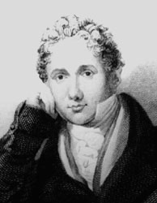
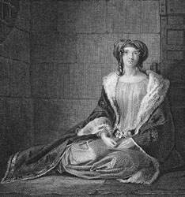
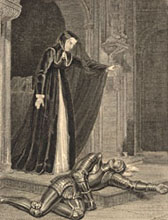
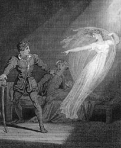

|
|
Home | Corson
Collection | Biography | Works | Image
Collection | Recent
Publications | Correspondence | Forthcoming
Events | Links | E-texts | Contact
Charles Heath (1785-1848)
| The landscape and figure engraver Charles Heath
was one of the most active and influential figures in British
book production
over the first half of the nineteenth-century. The son of James
Heath, Engraver to the King, he was born on 1 March 1785.
Apprenticed to his father, he made such rapid progress that
in 1801, Benjamin West, President of the Royal Academy, commissioned
him to engrave his large painting Our Lord Healing the
Sick. Heath's true talent, however, lay for smaller plates
for book illustration, where he was deemed to have perfected
the style initiated by his father. He was soon so much in demand
that he formed an atelier of assistants and pupils. As work
produced by the atelier was invariably signed by Heath, it
is often difficult to distinguish his own contribution from
that of his co-workers. At first Heath and his atelier specialised
in topographical prints but they soon turned to figure work,
contributing prolifically to popular editions of English classics.
A restless innovator, Heath has been credited with producing,
for Thomas Campbell's Pleasures of Hope (1820), the
first British published plates to feature engraving on steel
rather than copper. Heath was certainly among the first to
grasp the commercial advantage of steel over copper plates.
Whereas the latter could produce only a few thousand prints,
the latter could produce tens or even hundreds of thousands. |

Charles Heath, engraved by Elizabeth Dawson Turner,
ca.1820. Reproduced by kind permission of J.J. Heath-Caldwell.
|
|
| Charles Heath was also employed as art editor
and chief contributor on the increasingly popular annuals such
as the Forget Me Not, Literary Souvenir,
and The Amulet. He came to feel that
the market for such productions was largely untapped and that
it might permit him the opportunity to work as his own proprietor,
introducing ambitious illustrative ventures, dealing with publishers
on his own terms, holding copyrights, and using his own printing
house. In 1827, he set up his own annual The Keepsake,
for which he sought to enlist the leading literary figures
of the day. Knowing Scott's financial plight (see Financial
Hardship), he invited him to edit the annual. Scott thought
the plates 'beyond comparaison [sic] beautiful' but, as his Journal records
(30 January 1828), declined. He nonetheless sold Heath three
stories originally designed for Chronicles
of the Canongate but rejected by his publisher. 'My
Aunt Margaret's Mirror', 'The Tapestried Chamber', and 'Death
of the Laird's Jock' appeared in The Keepsake for MDCCCXXIX.
Scott's juvenile drama The House of Aspen followed
in The Keepsake for MDCCCXXX and, finally, 'A Highland
Anecdote' appeared in The Keepsake for MDCCCXXXII.
The Keepsake was followed, in 1832, by Heath's
Picturesque Annual and, in 1833, by Heath's Book of
Beauty. Heath was equally active in producing and promoting
large-scale pictorial monographs such as Turner's Picturesque
Views in England and Wales. |

Click on the
thumbnail above to see a full-size image of
Charles Heath's engraving of Rebecca, heroine
of Ivanhoe. Based on a design by Charles Robert
Leslie, it was published in The Keepsake
for MDCCCXXVIII.
|
|
From 1828 onwards, Heath engraved relatively little himself, increasingly
delegating work to his two sons Frederick Augustus (1810-78) and
Alfred (1812-1896). A third son, Henry became Miniature Painter
to Queen Victoria while his daughter Fanny married the artist Edward
Henry Corbould (a second-cousin) whose designs would be extensively
engraved by the Heaths. The family business branched out into security
engraving for banknotes, and in 1840, Charles and Frederick Augustus
were responsible for the engraving of the world's first postage
stamp, the 'Penny Black'. Despite his entrepreneurial talents,
Heath suffered constant financial difficulties. Bankrupted in 1821,
he was forced to sell stock engravings to raise money in 1826 and
1840 and drawings by modern artists in 1839. Nonetheless, he continued
to produce fine illustrated books such as Heath's Beauties
of the Opera and Ballet until his sudden death on 18 November
1848. His obituary in the Art Union declared 'that he has probably
created as much work for his professional brethren as any living
man'.
Charles Heath was constantly occupied on Scott-related projects
throughout his lengthy professional career. As his engravings were
frequently republished, it is difficult to ascertain the first
date of publication for each and to calculate precisely how many
Scott illustrations he engraved. Besides the difficulty in ascertaining
how much Heath contributed to the productions of his atelier, it
is also sometimes difficult to establish whether an engraving signed
'Heath' is the work of Charles or of his father. The following
list of illustrations is by necessity, then, selective.
| As early as 1809 Heath engraved six designs by
Richard Westall for John Sharpe's illustrated edition of The
Lay of the Last Minstrel and a further design by Westall
for Sharpe's edition of Marmion (to
which Heath's father James also contributed). In 1810 he again
engraved a design by Westall for Sharpe's The
Lady of the Lake followed by designs for Westall and
Singleton for Constable's 6th edition of Marmion.
In 1812, he engraved a design by Thomas Stothard (with whom
his father had already frequently collaborated) for White & Co's
edition of the Vision
of Don Roderick and, the following year, three designs
by the same artist for the 13th (Ballantyne) edition of Rokeby.
In 1815 he engraved four designs by Westall for Longman's edition
of The Lord of the
Isles. |

Click on the
thumbnail to see a full-size image of one of
Heath's engravings for the Lay of the Last
Minstrel.
|
|
| It is the early 1820s, however,
which sees Heath's greatest engagement with Scott's work. From
1820 to 1825 he
engraved numerous plates for Hurst, Robinson's series of Illustrations
to the Works of the Author of Waverley. From 1820 to 1826
he engraved nine Scott illustrations for The Lady's Magazine.
In addition, in 1820, he engraved Sir Henry Raeburn's 1808
portrait for Constable's edition of The Poetical Works
of Walter Scott Esq. and one plate for Illustrations
of the Novels and Tales of the Author of Waverley from Designs
by William Allan. The following year, he engraved a design
by Richard Cook for Longman's edition of The Lady of the
Lake. In 1823 he engraved all the title vignettes and
five frontispieces after designs by Charles Robert Leslie for
Constable's 18th edition of The Novels and Tales of the
Author of Waverley. In 1823, he engraved all the title-page
vignettes and five frontispieces for Constable's 4th edition
of The Poetical Works of Sir Walter Scott. (He was
also to provide fresh vignettes for the 5th edition in 1830).
It was partly the reputation won by his exceptionally popular
engravings of Scott's works that persuaded Heath to set up
as his own proprietor. |

Click on the
thumbnail to see a full-size image of an engraving
by Heath to illustrate an edition of The
Monastery.
|
|
These illustrations were much reprinted and it is not until the
late 1820s that we find further Scott-related engravings. For the
first two issues of his Keepsake, Heath engraved illustrations
to Ivanhoe and
'Death of the Laird's Jock'. In 1835, he engraved four illustrations
to Scott's poetical works after George Cattermole for Heath's
Picturesque Annual. The
Waverley Keepsake (1837) contained two new Heath prints
(after J.M. Wright) illustrating Rob
Roy. Finally in 1840, he 'superintended' the engraving
of the illustrations for Heath's Waverley Gallery of the
Principal Female Characters in Sir Walter Scott's Romances,
though does not seem to have included any work by his own hand.
|
Click on the thumbnail to see a full-size image of
an illustration to Rob Roy engraved by Charles Heath
after a design by J.M. Wright. |
|
It
may seem surprising that Heath contributed only one engraving to
the Magnum Opus edition of The Waverley Novels (the frontispiece
to vol. I of The Abbot, right), especially considering
that he was listed prominently among the engravers engaged when
the Prospectus for the edition was published. However, Heath requested
that 'instead of money you pay me for any Plates I may Engrave
by writing as many pages per Plate [for the Keepsake]
as may be agreed on' (letter of 23 February 1829, National Library
of Scotland MS 3908/98-99). Scott judged this 'a pretty mode of
accounting' and, with the approval of his editor Cadell, declined
the proposal. Scott had also been struck by 'one funny part' of
Heath's letter in which he assured Scott that, all the works having
been previously published, 'the success of the new Edition of the
waverley novels [sic] depended entirely on the excellence of the
illustrations' (Journal, 27 February 1829). Scott appears
to have been more amused than offended by Heath's comment, judging
him 'well enough for his profession' (Letters, X, 374).
Heath, though, appears to have lost the opportunity to contribute
substantially to a landmark in the history of illustrated books.
For more engravings by Heath, search the Image
Database. Heath is the best-represented engraver in the Corson
Collection and was probably the most prolific engraver of
illustrations to Scott's work. For further information on Heath
and his family visit J.J. Heath-Caldwell's webpage.
Bibliography
- Bryan, Michael. Dictionary of Painters
and Engravers: Biographical and Critical. New ed., rev.
and enl., ed. Robert Edmund Graves (London: G. Bell, 1886-1889)
- Dictionary of National Biography (London
: Oxford University Press, 1921)
- Heath, John. The Heath Family Engravers
1779-1878 (Aldershot, Hants: Scolar Press, 1993)
- Scott, Walter, Sir.The Journal of Sir Walter Scott,
Bart., ed. W. E .K. Anderson (Oxford: Clarendon Press,
1972)
- Scott, Walter, Sir. The
Letters of Sir Walter Scott, ed. H. J. C. Grierson (London:
Constable, 1932-37)
- Todd, William. B., and Ann Bowden, Sir
Walter Scott: A Bibliographical History, 1796-1832 (New
Castle, DE: Oak Knoll Press, 1998)
Back to Index

Last updated: 21-Mar-2004
© Edinburgh University Library
|
|